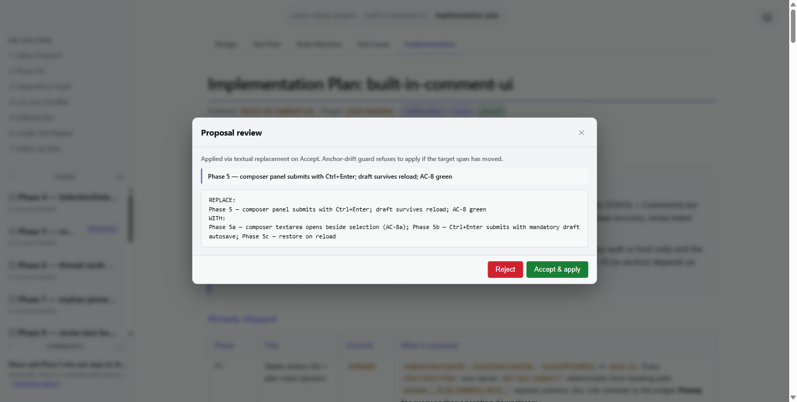
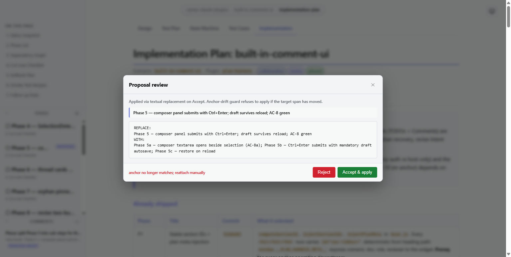

Proposal Accept — apply diff to doc, mark comment accepted + resolved
PASS (fixed in-session)| # | Condition | Action | Result | Evidence |
|---|---|---|---|---|
| 1 | Fixture seeded: cmt_c06f7d in proposed state with cmt_c06f7d.diff on disk. Comments panel shows 1 item with ph-proposed class. |
browser_click(.ph-panel-item.ph-proposed) |
Proposal modal renders with REPLACE/WITH diff preview. Accept + Reject buttons visible. PASS |  |
| 2 | Modal open, parsed diff shows Phase 5 — composer… → Phase 5a/5b/5c… |
browser_click(.ph-proposal-accept) |
PASS (after fix) — doc is rewritten in place; revise-dispatcher.js now normalizes HTML (decodes entities + strips inline tags) into a rendered-text view with position map, finds the needle in that view, maps the match back to the raw-HTML span, and splices parsed.to. See §3 for the diagnostic + patch. Initial run returned 409 ANCHOR_DRIFT (screenshot captured). |
 (final-state only) |